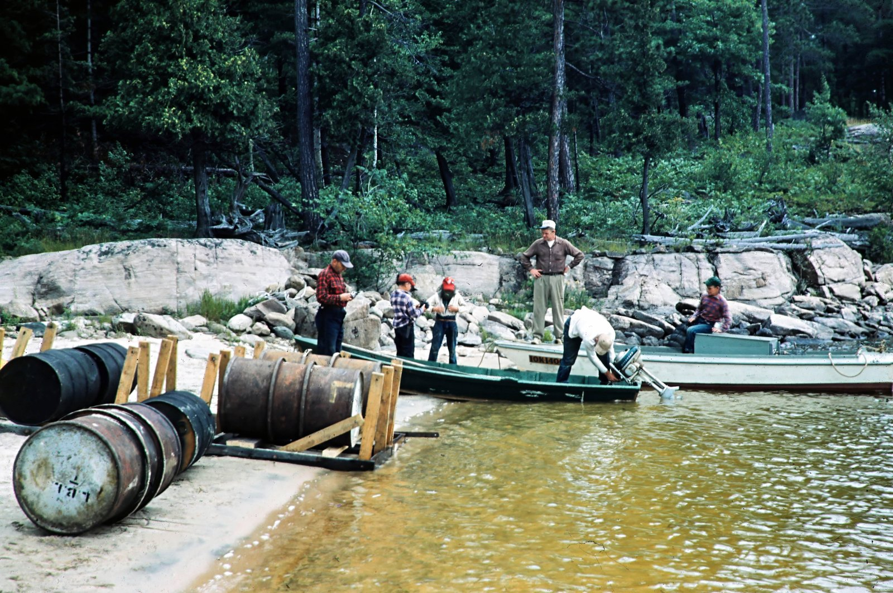

Lovesick Rapids July 1951
Dinner at Lovesick July 1951
peggy y Diney eating watermelion at Lovesick TDP dropped mellon ...rocks
cook out Parwood August 1961
Preparation for overnight trip to wolf August 1951
ready to go on over night to wolf August 1951
Ed OHare Sally September 1951
July 1951 A visit from the Griffins and guests, Note, no windows!
July 1951 raft is sinking
Raft July 1951
Parwood Pt July 1951 raft
Raft Launching July 1951
Mary Ed OHare, Back Bay Parwood July 1951
Relaxing after stormy fishing expediteion befor...fters
July 1951 new fireplace being enjoyed after wet fishing trip
July 1951 canada Peggy, Diney ready to go fishing in storm
July 1951 preparations to Lake off in storm to fish
August 1951 Hard work on new dormitory
August 1951 new dorm
August 1951 Big Day, lumber arriving for new dormitory
Cookout parwood pt, August 1951
July 1951 clean up day
wash day, August 1951 mom, teddy, diney, mary, barry, johnny
sunset parwood August 1951
1951
view down mag from parwood August 1951
Parwood pt. August 1951, 2 tents used by Peggy, Diney, Barry and Johnny
TDPvmmp, Sleeping cabin August 1951
TDP and MMP, sleeping cabin August 1951
Parwood Pt. August 1951
Harrisons Landing July 1951
 ›
›